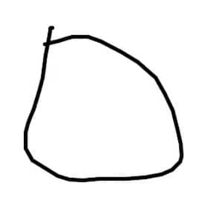
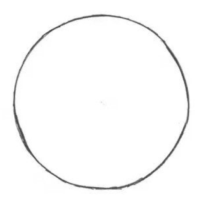
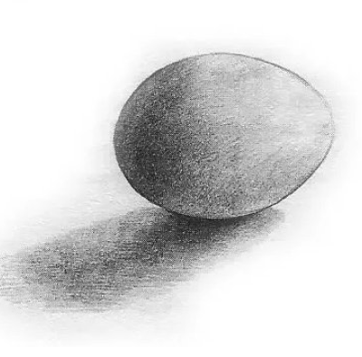
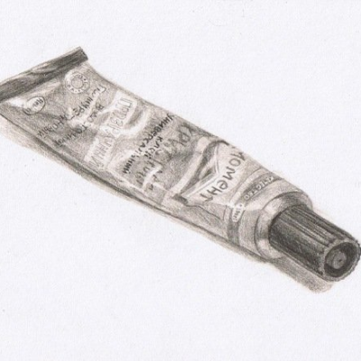
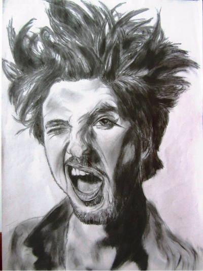

шаг 1. Изучаем простые формы
Попробуйте создать простую форму. Например, нарисуйте круг, а затем продолжайте практиковать его.
Каждый раз пытайтесь нарисовать идеальный круг. Если вы действительно отнесетесь к этому заданию серьезно, то оно может занять у нас несколько дней или даже месяцев. Нарисовать ровный круг, используя только ваши руки, сложнее, чем вы себе представляете.
Аналогичным образом, начните работать с другими базовыми фигурами, такими как треугольник, квадрат, куб, восьмиугольник и т.п


шаг 4. Рисуем сложные формы


Вокруг существуют множество различных предметов. Научитесь рисовать то, что видите. Это один из самых важных шагов, чтобы стать професиональным художником. Не переживайте, если сначала у вас будет не очень хорошо получаться. Иногда, когда вы начинаете рисовать то, что видите, начало эскиза может выглядеть довольно ужасно, но итог может получиться потрясающим. Так начните делать это!
Попробуйте рисовать два случайных объекта в день. Рисунок должен быть цельным: рисование + затенение + падающая тень + любой другой специальный эффект
шаг 5. Рисуем живых существ
Самый главный совет — держать глаза и разум широко открытыми. Вы должны наблюдать за всем вокруг.
Так что наблюдайте все нюансы — прогулку людей, полет птицы, позу собаки и т. д. И, когда это возможно, создавайте быстрый скетч этой конкретной позиции, движения, выражения и т. д.
Изучите анатомию. Да, анатомия такая же, как и на уроке биологии. Нужно изучить кости скелета и расположение мышц.
